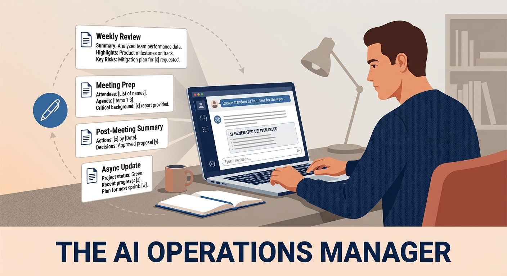

<title>The AI Operations Manager</title>
<link rel="stylesheet" href="https://fonts.googleapis.com/css2?family=DM+Serif+Display:ital@0;1&family=DM+Sans:ital,wght@0,300;0,400;0,500;0,600;1,300;1,400&family=DM+Mono:wght@400;500&display=swap">

<style>
:root {
  --bg:#F8F7F4;--bg-card:#FFFFFF;--bg-muted:#F0EEE9;--fg:#1A1814;--fg-mid:#4A4740;--fg-sub:#7A7670;
  --accent:#1A3A5C;--accent-2:#C5401A;--accent-3:#2E6B3E;--rule:#E0DDD8;
  --tag-conv:#EAF0F7;--tag-conv-fg:#1A3A5C;--tag-acc:#FBF0E8;--tag-acc-fg:#C5401A;--tag-agent:#EAF3EC;--tag-agent-fg:#2E6B3E;
  --font-display:'DM Serif Display',Georgia,serif;--font-body:'DM Sans',system-ui,sans-serif;--font-mono:'DM Mono','Courier New',monospace;
  color-scheme:light;
}
@media (prefers-color-scheme:dark){:root:not([data-theme="light"]){
  --bg:#111210;--bg-card:#1C1C1A;--bg-muted:#242421;--fg:#F0EDE8;--fg-mid:#B8B4AE;--fg-sub:#7A7670;
  --accent:#7AAFD4;--accent-2:#E8734A;--accent-3:#5EAA74;--rule:#2E2E2A;
  --tag-conv:#1A2530;--tag-conv-fg:#7AAFD4;--tag-acc:#2A1A12;--tag-acc-fg:#E8734A;--tag-agent:#182418;--tag-agent-fg:#5EAA74;
  color-scheme:dark;
}}
:root[data-theme="dark"]{
  --bg:#111210;--bg-card:#1C1C1A;--bg-muted:#242421;--fg:#F0EDE8;--fg-mid:#B8B4AE;--fg-sub:#7A7670;
  --accent:#7AAFD4;--accent-2:#E8734A;--accent-3:#5EAA74;--rule:#2E2E2A;
  --tag-conv:#1A2530;--tag-conv-fg:#7AAFD4;--tag-acc:#2A1A12;--tag-acc-fg:#E8734A;--tag-agent:#182418;--tag-agent-fg:#5EAA74;
  color-scheme:dark;
}
*,*::before,*::after{box-sizing:border-box;margin:0;padding:0;}
body{font-family:var(--font-body);background:var(--bg);color:var(--fg);font-size:17px;line-height:1.7;}
.site-nav{position:sticky;top:env(safe-area-inset-top,0px);background:var(--bg);border-bottom:1px solid var(--rule);z-index:100;}
.nav-inner{max-width:960px;margin:0 auto;padding:0 24px;height:56px;display:flex;align-items:center;justify-content:space-between;gap:16px;}
.nav-brand{font-family:var(--font-display);font-size:1.1rem;color:var(--fg);text-decoration:none;white-space:nowrap;}
.nav-brand span{color:var(--accent-2);}
.nav-links{display:flex;align-items:center;gap:24px;}
.nav-links a{font-size:0.875rem;font-weight:500;color:var(--fg-mid);text-decoration:none;transition:color .15s;}
.nav-links a:hover{color:var(--fg);}
.nav-cta{background:var(--accent);color:#fff!important;padding:6px 14px;border-radius:6px;font-size:0.8rem!important;white-space:nowrap;}
.nav-cta:hover{opacity:.88;}
.page-wrap{max-width:720px;margin:0 auto;padding:48px 24px 96px;}
.breadcrumb{display:flex;align-items:center;gap:6px;font-size:0.8rem;color:var(--fg-sub);margin-bottom:36px;flex-wrap:wrap;}
.breadcrumb a{color:var(--fg-sub);text-decoration:none;}
.breadcrumb a:hover{color:var(--accent);}
.breadcrumb .sep{opacity:.5;}
.pattern-header{margin-bottom:40px;}
.pattern-meta{display:flex;align-items:center;gap:10px;margin-bottom:16px;flex-wrap:wrap;}
.pattern-num{font-family:var(--font-mono);font-size:0.75rem;color:var(--fg-sub);letter-spacing:.08em;}
.tag{display:inline-flex;align-items:center;padding:3px 10px;border-radius:100px;font-size:0.72rem;font-weight:600;letter-spacing:.04em;text-transform:uppercase;}
.tag-agent{background:var(--tag-agent);color:var(--tag-agent-fg);}
.pattern-title{font-family:var(--font-display);font-size:clamp(1.9rem,4vw,2.6rem);line-height:1.15;color:var(--fg);text-wrap:balance;margin-bottom:16px;}
.pattern-lead{font-size:1.1rem;color:var(--fg-mid);max-width:60ch;line-height:1.65;}
.graphic-zone{background:var(--bg-muted);border:2px dashed var(--rule);border-radius:12px;margin:40px 0;padding:40px 32px;display:flex;flex-direction:column;align-items:center;gap:12px;text-align:center;min-height:240px;justify-content:center;}
.graphic-zone.has-graphic{border-style:solid;border-color:var(--rule);padding:0;overflow:hidden;}
.graphic-zone.has-graphic img{width:100%;height:auto;display:block;}
.graphic-label{font-family:var(--font-mono);font-size:0.7rem;letter-spacing:.1em;text-transform:uppercase;color:var(--fg-sub);}
.graphic-caption{font-size:0.875rem;color:var(--fg-sub);max-width:46ch;}
.graphic-icon{width:48px;height:48px;color:var(--fg-sub);opacity:.4;}
.pattern-body{display:flex;flex-direction:column;gap:0;}
.section{padding:36px 0;border-top:1px solid var(--rule);}
.section:first-child{border-top:none;padding-top:0;}
.section-label{font-family:var(--font-mono);font-size:0.7rem;letter-spacing:.12em;text-transform:uppercase;color:var(--fg-sub);margin-bottom:12px;}
.section h2{font-family:var(--font-display);font-size:1.55rem;line-height:1.2;margin-bottom:16px;color:var(--fg);}
.section p{color:var(--fg-mid);max-width:65ch;margin-bottom:1em;}
.section p:last-child{margin-bottom:0;}
.section p em{color:var(--fg);font-style:italic;}
.cadence-grid{display:grid;grid-template-columns:repeat(auto-fill,minmax(220px,1fr));gap:12px;margin:24px 0;}
.cadence-card{background:var(--bg-card);border:1px solid var(--rule);border-radius:8px;padding:16px;}
.cadence-label{font-family:var(--font-mono);font-size:0.65rem;letter-spacing:.1em;text-transform:uppercase;color:var(--accent);margin-bottom:6px;}
.cadence-desc{font-size:0.875rem;color:var(--fg-mid);line-height:1.5;}
.notes-aside{background:var(--bg-muted);border-radius:10px;padding:20px 22px;margin:16px 0;font-size:0.9rem;color:var(--fg-mid);}
.notes-aside p{margin-bottom:.75em;}
.notes-aside p:last-child{margin-bottom:0;}
.value-box{background:var(--bg-card);border:1px solid var(--rule);border-radius:10px;padding:24px;margin:24px 0;display:flex;flex-direction:column;gap:8px;}
.value-item{display:flex;gap:10px;align-items:flex-start;font-size:0.925rem;color:var(--fg-mid);}
.check{flex-shrink:0;color:var(--accent-3);margin-top:2px;}
.related{margin-top:64px;padding-top:40px;border-top:2px solid var(--rule);}
.related-heading{font-family:var(--font-display);font-size:1.3rem;margin-bottom:24px;color:var(--fg);}
.related-grid{display:grid;grid-template-columns:repeat(auto-fill,minmax(200px,1fr));gap:16px;}
.related-card{background:var(--bg-card);border:1px solid var(--rule);border-radius:10px;padding:18px;text-decoration:none;color:var(--fg);display:flex;flex-direction:column;gap:6px;transition:border-color .15s,box-shadow .15s;}
.related-card:hover{border-color:var(--accent);box-shadow:0 2px 12px rgba(0,0,0,.06);}
.related-num{font-family:var(--font-mono);font-size:0.68rem;color:var(--fg-sub);letter-spacing:.08em;}
.related-title{font-size:0.9rem;font-weight:500;line-height:1.35;}
.related-rel{font-size:0.75rem;color:var(--fg-sub);margin-top:2px;}
.talk-strip{background:var(--accent);color:#fff;margin-top:80px;}
.talk-inner{max-width:960px;margin:0 auto;padding:48px 24px;display:flex;flex-direction:column;align-items:center;text-align:center;gap:24px;}
.talk-strip h2{font-family:var(--font-display);font-size:1.8rem;color:#fff;text-wrap:balance;}
.talk-strip p{font-size:1rem;opacity:.8;max-width:50ch;}
.talk-ctas{display:flex;gap:12px;flex-wrap:wrap;justify-content:center;}
.talk-btn{display:inline-flex;align-items:center;gap:8px;padding:12px 22px;border-radius:8px;font-size:0.9rem;font-weight:500;text-decoration:none;transition:opacity .15s;}
.talk-btn:hover{opacity:.88;}
.talk-btn-primary{background:#fff;color:var(--accent);}
.talk-btn-secondary{background:rgba(255,255,255,.15);color:#fff;border:1px solid rgba(255,255,255,.3);}
footer{border-top:1px solid var(--rule);padding:24px;text-align:center;font-size:0.8rem;color:var(--fg-sub);}
@media(max-width:600px){.nav-links{display:none;}.page-wrap{padding:32px 16px 72px;}.cadence-grid{grid-template-columns:1fr;}}
</style>

<nav class="site-nav">
  <div class="nav-inner">
    <a class="nav-brand" href="../index.html">AI Success <span>Patterns</span></a>
    <div class="nav-links">
      <a href="../index.html">Library</a>
      <a href="../index.html#about">About</a>
      <a href="https://www.linkedin.com/in/gtstellf" target="_blank" rel="noopener" class="nav-cta">Talk to Greg</a>
    </div>
  </div>
</nav>

<main class="page-wrap">
  <nav class="breadcrumb" aria-label="Breadcrumb">
    <a href="../index.html">Library</a>
    <span class="sep">›</span>
    <span>Pattern 04</span>
  </nav>

  <header class="pattern-header">
    <div class="pattern-meta">
      <span class="pattern-num">PATTERN 04</span>
      <span class="tag tag-agent">Agentic</span>
    </div>
    <h1 class="pattern-title">The AI Operations Manager</h1>
    <p class="pattern-lead">Define a recurring coordination role and assign it to AI as a persistent function  -  not a one-time task. The coordination tax on every knowledge worker's week drops substantially.</p>
  </header>

  <figure class="graphic-zone has-graphic" id="graphic-zone" aria-label="Pattern diagram">
    
  </figure>

  <article class="pattern-body">

    <section class="section">
      <p class="section-label">Context</p>
      <h2>When this pattern applies</h2>
      <p>Multi-step workflows, project coordination, or any recurring process that involves organizing information, tracking status, routing tasks, or synthesizing inputs from multiple sources.</p>
      <p>Applies when the work is structured but time-consuming  -  the kind of coordination work that rarely requires judgment but always requires attention.</p>
    </section>

    <section class="section">
      <p class="section-label">Problem</p>
      <h2>Coordination work drains the people who should be deciding</h2>
      <p>Professionals spend enormous time on coordination work: status updates, meeting prep, follow-up summaries, task routing, and information synthesis.</p>
      <p>This work is necessary, predictable, and low-judgment  -  exactly the profile where humans are least valuable and most drained. Delegating it to AI as a one-off task captures some value. Delegating it as a structured, repeatable workflow captures far more.</p>
    </section>

    <section class="section">
      <p class="section-label">Solution</p>
      <h2>Assign AI a standing coordination role</h2>
      <p>Define a recurring coordination role and assign it to AI as a persistent function. Structure the AI's role with a standing context document (see <a href="02-onboard-dont-program.html" style="color:var(--accent)">Onboard, Don't Program</a>) that describes the project, stakeholders, decision history, and current state. Treat each session as a handoff, not a cold start.</p>

      <div class="cadence-grid">
        <div class="cadence-card">
          <p class="cadence-label">Weekly</p>
          <p class="cadence-desc">Synthesize project status from notes, emails, or tool exports; produce a briefing</p>
        </div>
        <div class="cadence-card">
          <p class="cadence-label">Meeting Prep</p>
          <p class="cadence-desc">Pull context from prior sessions; draft agenda and talking points</p>
        </div>
        <div class="cadence-card">
          <p class="cadence-label">Post-Meeting</p>
          <p class="cadence-desc">Capture decisions and action items in a structured format</p>
        </div>
        <div class="cadence-card">
          <p class="cadence-label">Async Updates</p>
          <p class="cadence-desc">Route information to the right summary document or channel</p>
        </div>
      </div>
    </section>

    <section class="section">
      <p class="section-label">Value Consequence</p>
      <h2>Attention shifts from managing information to using it</h2>
      <div class="value-box">
        <div class="value-item">
          <svg class="check" width="16" height="16" viewBox="0 0 16 16" fill="none" aria-hidden="true"><circle cx="8" cy="8" r="7" stroke="currentColor" stroke-width="1.5"/><path d="M5 8.5l2 2 4-4" stroke="currentColor" stroke-width="1.5" stroke-linecap="round" stroke-linejoin="round"/></svg>
          <span>Coordination overhead  -  the invisible tax on every knowledge worker's week  -  drops substantially</span>
        </div>
        <div class="value-item">
          <svg class="check" width="16" height="16" viewBox="0 0 16 16" fill="none" aria-hidden="true"><circle cx="8" cy="8" r="7" stroke="currentColor" stroke-width="1.5"/><path d="M5 8.5l2 2 4-4" stroke="currentColor" stroke-width="1.5" stroke-linecap="round" stroke-linejoin="round"/></svg>
          <span>Projects move faster not because the work is different, but because the friction between work and awareness is removed</span>
        </div>
        <div class="value-item">
          <svg class="check" width="16" height="16" viewBox="0 0 16 16" fill="none" aria-hidden="true"><circle cx="8" cy="8" r="7" stroke="currentColor" stroke-width="1.5"/><path d="M5 8.5l2 2 4-4" stroke="currentColor" stroke-width="1.5" stroke-linecap="round" stroke-linejoin="round"/></svg>
          <span>The human's attention shifts from managing information to using it</span>
        </div>
      </div>
    </section>

    <section class="section">
      <p class="section-label">Notes</p>
      <h2>The entry point for most agentic deployments</h2>
      <div class="notes-aside">
        <p>This pattern is the entry point for most agentic AI deployments in professional services. Organizations that implement it at the team level  -  shared context, shared process, consistent outputs  -  report the highest satisfaction with AI ROI.</p>
        <p>The pattern extends naturally into tool-connected agents (calendar, email, project management) when those integrations are available.</p>
      </div>
    </section>

  </article>

  <aside class="related">
    <h2 class="related-heading">Related Patterns</h2>
    <div class="related-grid">
      <a href="02-onboard-dont-program.html" class="related-card">
        <span class="related-num">PATTERN 02</span>
        <span class="related-title">Onboard, Don't Program</span>
        <span class="related-rel">Related</span>
      </a>
      <a href="01-begin-with-end-in-mind.html" class="related-card">
        <span class="related-num">PATTERN 01</span>
        <span class="related-title">Begin with the End in Mind</span>
        <span class="related-rel">Related</span>
      </a>
    </div>
  </aside>
</main>

<section class="talk-strip">
  <div class="talk-inner">
    <h2>Put this pattern to work</h2>
    <p>Greg works with teams building AI into their practice. If you want to go deeper on any pattern, start a conversation.</p>
    <div class="talk-ctas">
      <a href="https://bookings.cloud.microsoft/bookwithme/user/dcceec89368b4eaaa3b2558d75329dc2@level5iveconsulting.com/meetingtype/hzNu5frW6k2PQLa9IJ8LXQ2?anonymous&ismsaljsauthenabled&ep=mcard" target="_blank" rel="noopener" class="talk-btn talk-btn-primary">Book a meeting</a>
      <a href="https://www.linkedin.com/in/gtstellf" target="_blank" rel="noopener" class="talk-btn talk-btn-secondary">Connect on LinkedIn</a>
    </div>
  </div>
</section>
<footer><p>© 2024 Level 5ive Consulting · <a href="../index.html" style="color:inherit">AI Success Patterns</a></p></footer>
